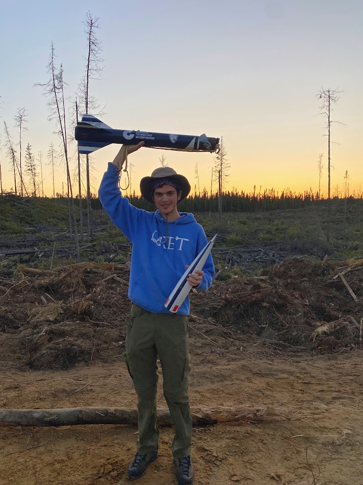

University Team Rocketry
Where it all started
When I was a high school student, I had a distant accquantaince who was doing engineering at a university in the states. He told me about how he was part of his school's team for NASA Student Launch. That was when I discovered that university rocket engineering teams were a thing, and I made sure I would join one as soon as I started my own post secondary education.
I joined QRET (qret.ca) right at the start of first year in 2018. I worked on the aerodynamics subteam, helping design the fins and nosecone and working on the flight simulations for that year's entry into the Intercollegiate Rocket Engineering Competition at Spaceport America, New Mexico, which came 6th in the 30k ft commercial motor class!
I then became subteam lead, but unfortunately the next few years were marred by the pandemic. We still managed to compete in competitions as soon as they restarted, flying to 25,000 ft at IREC 2022 and attending the first ever Launch Canada that year in Cochrane, Ontario!
In my final year, I became the Chief Technical Officer, managing seven subteams and overseeing the design of the entry into IREC and Launch Canada. I also encouraged and lead several students to get their first high power rocketry certifications. Unfortunately, our rocket lost a fin at Mach 1.9 at IREC in New Mexico in June (left). However, we bounced back and in just two months built a backup rocket for Launch Canada, which performed perfectly and actually achieved first place in category for the team! (Right) It was a wonderful way to end my career in student rocketry.

While on my internship year in Vancouver in 2021-2022, I was able to work with the team at UBC Rocket thanks to the openness of their team leadership. I worked on the airframe and internals team for their (now since abandoned) high altitude liquid rocket project. It was during this time with UBC that I learned much of my manual machining skills. We sure did a lot of prototyping and fabrication of all kinds at UBC. Waterjetting, milling, turning, welding - it all happened. We worked on ablative testing, composite infusion, and even built a huge stainless steel sheet metal riveted nosecone. It was also thanks to UBC that I got to attend the 2022 IREC - Queen's had hit a maximum number of people who could be brought, but UBC happily let me tag along on the road trip down through the American west. I have plenty of great memories and friends from my days at UBC and remain thankful to them.
Since graduating from Queen's, I have been a volunteer for Launch Canada. My main role has been as a judge for the solids category, although I have also worked on helping with the live stream broadcast, and have served on committee for the rules and regulations, helping develop the new Junior category for 2026. I hope to remain involved with Launch Canada for years to come. It really is a fantastic event for students all across the country.
Queen's Rocket Engineering Team
UBC Rocket
Launch Canada